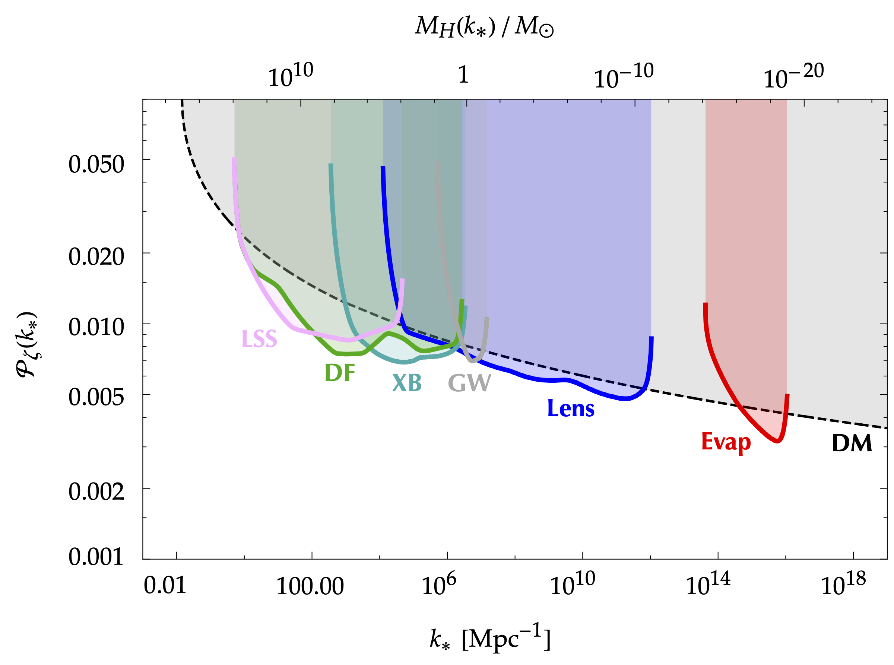
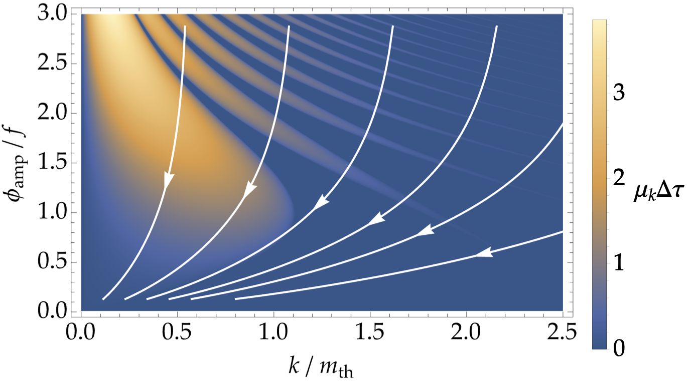
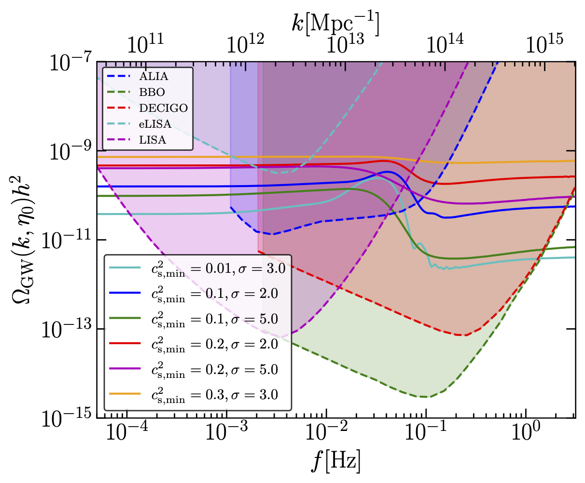

I'm Yuichiro TADA.
Nonlinear Lattice Framework for Inflation: Bridging stochastic inflation and the $\delta N$ formalism
Pankaj Saha, Yuichiro Tada, and Yuko Urakawa
arXiv:
2604.00978
[gr-qc].
STOchastic LAttice Simulation of hybrid inflation
Tomoaki Murata and Yuichiro Tada
arXiv:
2603.04850
[astro-ph.CO].
About Me
I'm a theoretical scientist in University of Fukui, Japan. I'm working to elucidate inflation, dark matter, and dark energy, a.k.a. the three mysteries of the universe, combining theory, observation, and numerical simulation. I have developed a computer simulator of inflation, STOchastic LAttice Simulation (STOLAS), to investigate the physics of the primordial black hole as a candidate for dark matter. I'm also interested in the theoretical framework of dynamical dark energy, and its observational signatures.
I'm from Saitama, Japan. I completed B.Sc. in Physics in 2012 and M.Sc. in Physics in 2014, and received Ph.D. in Physics from the University of Tokyo in March 2017.
Contact Details
Yuichiro Tada
1204 in Science Tower I, University of Fukui
3-9-1 Bunkyo, Fukui
Fukui 910-8507, Japan
+81 (0)80-9566-9181
ytada@u-fukui.ac.jp
Check Out Some of My Works.


STOchastic LAttice Simulation of inflation
Stochastic formalism can view inflation as a set of "random walks". We have developed a computer simulator of inflation, STOLAS, based on this stochastic formalism. It is the first simulation which can calculate the curvature perturbation in a non-perturbative way. It would be helpful to investigate the physics of, e.g., the primordial black hole as a candidate for dark matter. Also, it could be connected to the existing simulations of halos/galaxies, enabling us to simulate the whole history of the universe! Inflation, Random walk, Lattice simulation

Primordial Black Holes
Primordial black holes (PBHs) are hypothetical black holes formed in the very early universe. They are a candidate of dark matter as well as a source of merger gravitational waves detected by LIGO/Virgo/KAGRA observatories. I have so far working on their formation scenarios, gravitational wave signatures, precise calculation of their abundance, etc., which are summarised in the anthology textbook.
Dark Matter, Gravitational Wave, Inflation
Dynamical Dark Energy
Recent detailed observations of the large-scale structure of galaxies suggested that "dark energy", the source of the accelerated expansion of the universe today, might be time-evolving. We have quickly reported its interpretation as a dynamical scalar field known as "quintessence". We have also investigated what happens if the quintessence field resonantly enhances its fluctuations.
Dark energy, Quintessence, Resonance
Scalar-Induced Gravitational Waves
(Possible) large primordial density perturbations can induce gravitational waves via their accoustic oscillation, known as "scalar-induced gravitational waves (SIGWs)". Not only can they be a smoking gun of PBHs, but also they can record the thermal history of the universe, such as a plasma crossover represented by QCD.
Gravitational wave, Primordial black hole, Thermal history
Girl
Proin gravida nibh vel velit auctor aliquet. Aenean sollicitudin, lorem quis bibendum auctor, nisi elit consequat ipsum, nec sagittis sem nibh id elit.
Photography
Origami
Proin gravida nibh vel velit auctor aliquet. Aenean sollicitudin, lorem quis bibendum auctor, nisi elit consequat ipsum, nec sagittis sem nibh id elit.
Branding, Illustration
Education
The University of Tokyo
Ph.D. in Physics
•
23rd March 2017
Department of Physics, Adviser:
Dr. Masahiro Kawasaki & Dr. Hitoshi Murayama
The University of Tokyo
M.Sc. in Physics
•
24th March 2014
Department of Physics, Adviser:
Dr. Masahiro Kawasaki & Dr. Hitoshi Murayama
The University of Tokyo
B.Sc. in Physics
•
23rd March 2012
Department of Phyiscs
Kaichi high school
Graduate • March 2008
Career
University of Fukui
Lecturer
•
April 2026–Present
Quantum Physics and Mathematical Sciences, Department of Applied Physics
Rikkyo University
Assistant Professor
•
April 2025–March 2026
Department of Physics
Nagoya University
Designated Assistant Professor
•
April 2021–March 2025
Institute for Advanced Research & Department of Physics, C-lab.
High Energy Accelerator Research Organization
Associate Researcher
•
April 2022–March 2023
Institute of Particle and Nuclear Studies
Daido University
Lecturer (part-time)
•
April 2019–March 2021
Classical mechanics 1, 2
Nagoya University
JSPS Fellow (PD)
•
April 2018–March 2021
C-lab., Department of Physics
Institute d'Astrophysique de Paris
PD researcher
•
April 2017–March 2018
Dr. Sébastien Renaux-Petel's Group
The University of Tokyo
JSPS Fellow (DC2)
•
April 2015–March 2017
Kavli IPMU & ICRR
The University of Tokyo
ALPS Fellow
•
October 2012–March 2017
Kavli IPMU & ICRR
Achievenments
Ph.D. thesis
Curvature Perturbations and Primordial Black Hole Formation in the Inflationary Universe
Department of Physics, The University of Tokyo,
Bunkyo-ku, Tokyo 113-0033, Japan
Kavli Institute for the Physics and
Mathematics of the Universe (WPI), UTIAS,
The University of Tokyo, 5-1-5 Kashiwanoha,
Kashiwa, Chiba 277-8583, Japan
Institute for Cosmic Ray Research,
The University of Tokyo, 5-1-5 Kashiwanoha,
Kashiwa, Chiba 277-8582, Japan
| Referees | |
|---|---|
| Dr. Masahiro Kawasaki | Supervisor |
| Dr. Hitoshi Murayama | Supervisor |
| Dr. Koichi Hamaguchi | Chief Examiner |
| Dr. Aya Bamba | Examiner |
| Dr. Masahiro Ibe | Examiner |
| Dr. Shinji Miyoki | Examiner |
| Dr. Jun’ichi Yokoyama | Examiner |
M.Sc. thesis
The stochastic approach to the inflationary universe
Department of Physics, The University of Tokyo,
Bunkyo-ku, Tokyo 113-0033, Japan
Kavli Institute for the Physics and
Mathematics of the Universe (WPI), UTIAS,
The University of Tokyo, 5-1-5 Kashiwanoha,
Kashiwa, Chiba 277-8583, Japan
| Referees | |
|---|---|
| Dr. Masahiro Kawasaki | Supervisor |
| Dr. Hitoshi Murayama | Supervisor |
| Dr. Jun’ichi Yokoyama | Examiner |
Books
Black Holes in the Era of Gravitational-Wave Astronomy
Editor: Manuel Arca Sedda, Elisa Bortolas, Mario Spera
ISBN: 978-0-323-95636-9
Activities
Study Abroad
Prof. Kari Enqvist's group, University of Helsinki
•
1st October–22nd December 2014
ALPS course work
Peer Review
Classical and Quantum Gravity (CQG)
European Physical Journal C (EPJC)
Journal of Cosmology and Astroparticle Physics (JCAP)
Monthly Notices of the Royal Astronomical Society (MNRAS)
Modern Physics Letters A (MPLA)
Physical Review D (PRD)
Physical Review Letters (PRL)
Progress of Theoretical and Experimental Physics (PTEP)
Universe
Science Member
Physics meets Mathematics
(PI)
International Research Network Extragalactic astrophysics and Cosmology (NECO)
理論天文学宇宙物理学懇談会 • 2015年6月4日–現在
日本物理学会 •
2013年6月1日–現在
Conference Organisation
Dynamics of primordial black hole formation II
•
7–10th October 2024
"Physics meets Mathematics" まとめ合宿
•
10–12th February 2024
JGRG 32
•
27th November–1st December 2023
Outreach
自然科学カフェ
— 星が先かブラックホールが先か —
原始ブラックホール研究の最前線
多田祐一郎
2025年2月15日 @ 日比谷図書文化館 ４階 スタジオプラス
— 星が先かブラックホールが先か —
原始ブラックホール研究の最前線
多田祐一郎
2024年11月14日 @ 豊田西高校
招待講演
名大発アカデミックフラッシュ 第2報
宇宙の「インフレ」と「金融工学」
多田祐一郎
2021年9月3日 @ オンライン, 招待
名古屋大学・名古屋市科学館 公開オンラインセミナー
星が先かブラックホールが先か？原始ブラックホール研究の最前線
多田祐一郎
2021年8月22日 @ オンライン, 招待
Materials
C++ workshop
@ Nagoya U.
Julia seminar
•
Introductory Seminar on Basic Physics
@ Rikkyo U.
Awards
2025 Young Scientist Award of the Physical Society of Japan
確率形式によるインフレーション宇宙のゆらぎの非摂動的理解 • 2024年11月
CQG 2019–20 Highlights
Inflationary stochastic anomalies
L. Pinol, S. Renaux-Petel and Y. Tada
Class. Quant. Grav. 36, no. 7, 07LT01 (2019)
[arXiv:
1806.10126
[gr-qc]].
EPL 2020 Highlights
Conformal inflation in the metric-affine geometry
Y. Mikura, Y. Tada and S. Yokoyama
EPL 132, no.3, 39001 (2020)
[arXiv:
2008.00628
[hep-th]].
Outstanding Presentation Award Gold Prize
Online JGRG Workshop 2020
•
27th November 2020
Manifestly covariant theory of stochastic inflation (poster) ▼
L. Pinol, S. Renaux-Petel, and Y. Tada
Young Representative Speaker
FAPESP-JSPS Workshop on dark energy, dark matter, and galaxies
•
February 2019
Aspects of primordial black hole as dark matter (oral)
K. Inomata, M. Kawasaki, A. Kusenko, K. Mukaida, Y. Tada,
T. T. Yanagida, and S. Yokoyama
Director's Award
ICRR Master and Doctor Thesis Workshop • 24th February 2017
ポスターアワード1位
天文・天体物理若手夏の学校 • 2015年7月30日
ポスターアワード1位
天文・天体物理若手夏の学校 • 2013年8月1日
Funding
Stochastic lattice simulation of the inflationary universe
JSPS Grant-in-Aid for Scientific Research (C)
•
1st April 2024–31st March 2027
No. 24K07047, Principal Investigator, ¥4,550,000.
Physics meets Mathematics
2023 Collaborative Research Grants for YLC
•
1st July 2023–31st March 2024
Principal Investigator, ¥1,000,000.
Inflationary universe in light of stochastic calculus, primordial black holes, and gravitational waves
JSPS Grant-in-Aid for Early-Career Scientists
•
1st April 2021–31st March 2024
No. 21K13918, Principal Investigator, ¥4,680,000.
Aspects of gravity and quantum theory in the stochastic formalism
JSPS Grant-in-Aid for Early-Career Scientists
•
1st April 2019–31st March 2022
No. 19K14707, Principal Investigator, ¥1,560,000.
Curvature Perturbations and Primordial Black Hole Formation in the Inflationary Universe
Grant-in-Aid for JSPS Fellows
•
25th April 2018–31st March 2021
No. 18J01992, JSPS Fellow (PD), ¥3,640,000.
小スケール曲率ゆらぎの観測とインフレーション
Grant-in-Aid for JSPS Fellows
•
24th April 2015–31st March 2017
No. 15J10829, JSPS Fellow (DC2), ¥1,900,000.
Get In Touch.
Address & Phone
Yuichiro Tada
1204 in Science Tower I, University of Fukui
3-9-1 Bunkyo, Fukui
Fukui 910-8507, Japan
+81 (0)80-9566-9181
yuichiro.t.tada@gmail.com
ytada@u-fukui.ac.jp
yuichiro.tada@rikkyo.ac.jp
tada.yuichiro.y8@f.mail.nagoya-u.ac.jp
tada.yuichiro@e.mbox.nagoya-u.ac.jp
tada_at_iap.fr
yuichiro.tada_at_ipmu.jp